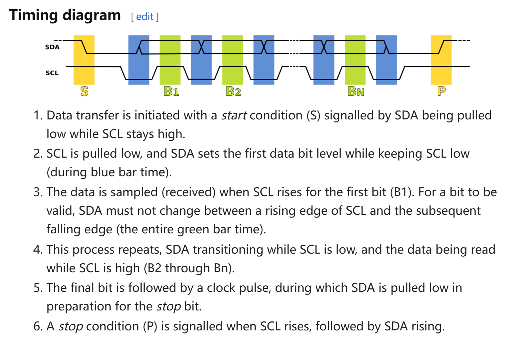

Hardware
UART
1.1 核心特性
- 通信类型：异步串行通信（无共享时钟）
- 线数：2 根（TX：发送，RX：接收）
- 拓扑结构：点对点（1:1 通信）
- 传输方向：全双工（同时收发）
- 电平标准：TTL（3.3V/5V）、RS-232（±12V）
1.2 时序特征
- 帧结构：
起始位（1bit） + 数据位（5-9bit） + 校验位（可选） + 停止位（1-2bit）

- 关键参数：
- 波特率（Baud Rate）：双方需严格一致（如 9600、115200）
- 时钟误差容忍度：通常要求误差 < 3%（依赖数据帧长度）
1.3 硬件层细节
- 线缆要求：
- 无需时钟线，但需共地（GND）
- 长距离需电平转换（如 MAX232 芯片转 RS-232）
- 冲突检测：无硬件仲裁机制
- 典型应用：
- 调试串口（Console）
- GPS 模块、蓝牙模块通信
I2C
2.1 核心特性
- 通信类型：同步半双工（共享时钟）
- 线数：2 根（SDA：数据线，SCL：时钟线）
- 拓扑结构：多主多从（总线型，需设备地址）
- 传输速度：
- 标准模式（100 kbps）
- 快速模式（400 kbps）
- 高速模式（3.4 Mbps）
- 电平标准：开漏输出（需外接上拉电阻）
2.2 时序特征
-
帧结构：
起始条件 + 地址帧（7/10bit） + 读写位 + ACK/NACK + 数据帧 + 停止条件
-
关键操作：
- 起始条件（Start）：SCL 高电平时 SDA 从高→低
- 停止条件（Stop）：SCL 高电平时 SDA 从低→高
- ACK/NACK：第9个时钟周期确认
2.3 硬件层细节
- 硬件设计：
- 总线需接上拉电阻（通常 4.7kΩ）
- 支持多设备（地址冲突需硬件跳线）
- 仲裁机制：基于 SDA 线“线与”特性（低电平优先）
- 时钟同步：支持时钟拉伸（Slave 可拉低 SCL）
- 典型应用：
- 传感器（如 BME280 温湿度传感器）
- EEPROM（如 AT24C02）
SPI
SPI 协议从零详解（超详细保姆级教程）
一、SPI 是什么？
SPI（Serial Peripheral Interface）是一种同步、全双工、主从式的串行通信协议，专门用于短距离高速通信（通常芯片间距离 < 1米）。它的核心特点是：
- 同步：通信双方共用时钟信号（SCLK）
- 全双工：可以同时发送和接收数据
- 主从架构：1个主设备控制总线，多个从设备通过片选信号（CS）连接
类比理解：想象主设备是老师，从设备是学生。老师通过点名（CS信号）选择要提问的学生，然后用统一的铃声（SCLK）控制问答节奏，学生和老师可以同时说话和听讲。
二、SPI 的物理连接
SPI 需要至少 4 根物理线路：
| 线名 | 全称 | 方向 | 作用 |
|---|---|---|---|
| SCLK | Serial Clock | 主→从 | 主设备产生的同步时钟信号 |
| MOSI | Master Out Slave In | 主→从 | 主设备发送数据，从设备接收数据 |
| MISO | Master In Slave Out | 从→主 | 从设备发送数据，主设备接收数据 |
| CS/SS | Chip Select/Slave Select | 主→从（每个从独立） | 主设备通过拉低此线选中特定从设备（类似"点名"） |
硬件连接示意图：
主设备
┌──────────────┐
│ │ CS1 ───────────────┐
│ SCLK ──────┼───────────SCLK │
│ MOSI ──────┼───────────MOSI │
│ MISO ──────┼───────────MISO │
│ │ CS2 ───────────────┤
└──────────────┘ │
从设备1 从设备2
┌─────┐ ┌─────┐
│ │ │ │
└─────┘ └─────┘
三、SPI 时序深度解析
1. 时钟模式（关键难点！）

SPI 有 4 种工作模式，由两个参数决定：
- CPOL（Clock Polarity）：时钟空闲时的电平
- 0：空闲时 SCLK 为低电平
- 1：空闲时 SCLK 为高电平
- CPHA（Clock Phase）：数据采样时刻
- 0：在时钟的第一个边沿（上升沿或下降沿）采样数据
- 1：在时钟的第二个边沿采样数据
四种模式对照表：
| 模式 | CPOL | CPHA | 采样时刻 | 应用场景 |
|---|---|---|---|---|
| 0 | 0 | 0 | 上升沿采样（时钟从低→高） | 大多数传感器 |
| 1 | 0 | 1 | 下降沿采样（时钟从高→低） | 某些存储器 |
| 2 | 1 | 0 | 下降沿采样（时钟从高→低） | 高速 ADC/DAC |
| 3 | 1 | 1 | 上升沿采样（时钟从低→高） | 特殊协议设备 |
Mode 0 时序图详解：
SCLK ___ ̄͞ ̄͞ ̄͞ ̄͞ ̄͞ ̄͞ ̄͞ ̄͞ ___
͞ ¯͞ ¯͞ ¯͞ ¯͞ ¯͞ ¯͞ ¯͞ ¯͞ ¯
| 1 | 2 | 3 | 4 | 5 | 6 | 7 | 8 | <- 时钟周期
MOSI ----[D7]---[D6]---[D5]---[D4]---...
___ ___
MISO ͞ ¯͞ ¯͞ ¯͞ ¯͞ ¯͞ ¯͞ ¯͞ ¯͞ ¯
- 每个时钟周期传输 1 bit 数据（8 个周期传 1 字节）
- 数据在 SCLK 的上升沿被采样
- 主从设备在 SCLK 的下降沿切换数据
2. 完整通信流程（以 Mode 0 为例）
- 片选激活：主设备拉低目标从设备的 CS 线
- 时钟启动：主设备开始产生 SCLK 信号
- 数据传输：
- 主→从：主设备在 SCLK 下降沿将数据放到 MOSI 线上
- 从→主：从设备在 SCLK 下降沿将数据放到 MISO 线上
- 数据采样：双方在 SCLK 上升沿读取对方的数据
- 传输结束：主设备拉高 CS 线
关键特点：
- 全双工优势：每个时钟周期同时收发 1 bit 数据
- 无地址字段：完全依赖硬件片选（CS）
- 无确认机制：假设物理连接可靠
四、SPI 的硬件实现细节
1. 电路设计要点
- 推挽输出：SPI 通常采用推挽驱动，无需上拉电阻
- 片选管理：每个从设备需要独立的 CS 线（N 个从设备需要 N+3 根线）
- 电平匹配：确保主从设备电压一致（3.3V 与 5V 设备需电平转换）
2. 速度优化技巧
- 时钟频率：可达 50MHz+（STM32H7 系列支持 133MHz）
- DMA 传输：减少 CPU 参与（适合大数据块传输）
- 双线模式：关闭 MISO 或 MOSI 实现半双工（节省引脚）
五、具体代码
// SPI Mode 0 (CPOL=0, CPHA=0)
SPI_InitTypeDef spi;
spi.Mode = SPI_MODE_MASTER;
spi.Direction = SPI_DIRECTION_2LINES; // 全双工
spi.DataSize = SPI_DATASIZE_8BIT;
spi.CLKPolarity = SPI_POLARITY_LOW; // CPOL=0
spi.CLKPhase = SPI_PHASE_1EDGE; // CPHA=0
spi.NSS = SPI_NSS_SOFT; // 软件控制CS
HAL_SPI_Init(&spi);
六、SPI 的优缺点
| 优点 | 缺点 |
|---|---|
| 全双工高速传输（理论无限速） | 需要较多物理线路（N+3） |
| 无复杂协议栈（实现简单） | 无硬件级错误检测 |
| 支持多从设备扩展 | 传输距离短（通常 < 1m） |
| 灵活的时钟模式配置 | 需要严格同步时钟 |
七、经典应用场景
-
存储器芯片
- Flash 芯片（如 W25Q128）：利用 SPI 高速读取固件
- SD 卡（SPI 模式）：兼容低引脚数微控制器
-
显示设备
- OLED 屏幕（SSD1306）：通过 SPI 快速刷新像素
- TFT 液晶屏：传输图像数据
-
传感器
- 加速度计（MPU6050）：实时读取运动数据
- 数字麦克风（MP34DT01）：传输音频流
-
无线模块
- WiFi 模块（ESP8266）：高速传输网络数据
- 蓝牙模块（HC-05）：配置参数和传输数据
八、学习路线建议
- 基础实验：用 Arduino 控制 SPI Flash 芯片（读写测试）
- 示波器观测：捕获 SCLK/MOSI/MISO 波形（理解时序）
- 协议分析：使用逻辑分析仪解码 SPI 数据
- 进阶应用：实现 DMA 传输优化（如 STM32 CubeMX）
- 故障排查：
- 无响应：检查 CS 信号是否激活
- 数据错误：确认时钟模式是否匹配
- 信号失真：缩短线长或降低时钟频率
通过以上系统学习，您将能熟练掌握 SPI 协议的设计与调试！
UART、I2C、SPI 对比
| 特性 | UART | I2C | SPI |
|---|---|---|---|
| 线数 | 2（TX+RX） | 2（SDA+SCL） | 4（SCLK+MOSI+MISO+CS） |
| 传输方向 | 全双工 | 半双工 | 全双工 |
| 拓扑结构 | 点对点 | 总线型（多主多从） | 星型（一主多从） |
| 时钟信号 | 无（异步） | 同步（SCL） | 同步（SCLK） |
| 寻址方式 | 无（仅点对点） | 7/10 位设备地址 | 硬件片选（CS） |
| 速度 | 低（通常 < 1 Mbps） | 中（最高 3.4 Mbps） | 高（可达 100+ Mbps） |
| 硬件复杂度 | 低 | 中（需上拉电阻） | 高（多片选线） |
| 抗干扰能力 | 弱（依赖波特率匹配） | 中（总线电容影响） | 强（推挽输出） |
| 典型场景 | 调试接口、模块间通信 | 传感器、低速设备 | 高速外设、存储器 |
选型建议
-
选择 UART：
- 简单双向通信，无需实时性
- 跨平台兼容性要求高（如与 PC 通信）
-
选择 I2C：
- 多设备共享总线，节省引脚资源
- 中低速传感器网络（如温湿度+气压传感器组合）
-
选择 SPI：
- 高速数据传输（如摄像头图像传输）
- 全双工实时控制（如电机驱动+反馈）
高级设计注意事项
-
UART 的波特率误差：
- 使用高精度晶振（误差 < 0.1%）
- 避免长距离传输（建议 < 1m，或使用 RS-485）
-
I2C 的总线电容：
- 总电容需 < 400pF（过长线缆需分段缓冲）
- 使用 I2C 电平转换器（如 PCA9306）实现 3.3V/5V 混接
-
SPI 的时钟偏移：
- 等长布线（SCLK 与数据线长度差 < 5mm）
- 高速模式下使用阻抗匹配（如 50Ω 端接电阻）
-
抗干扰设计：
- UART/I2C：使用双绞线 + 屏蔽层
- SPI：差分信号（如 SPI 转 LVDS）
- UART：简单灵活，适合松散耦合的异步通信
- I2C：引脚高效，适合中低速多设备场景
- SPI：性能王者，专为高速全双工设计 根据实际需求选择协议，并结合硬件设计与信号完整性优化，可构建稳定可靠的嵌入式通信系统。